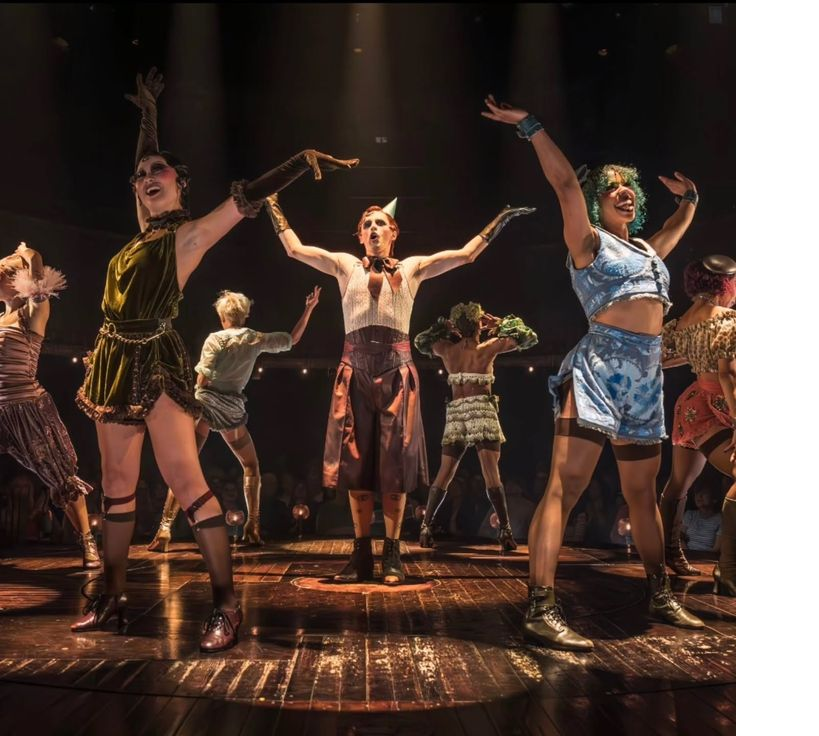

Uno de los musicales más importantes del teatro musical, conocido por su ambiente de cabaret, sus canciones y su historia ambientada en el Berlín de los años treinta.

Cabaret es un musical basado en el libro de Joe Masteroff, con música de John Kander y letras de Fred Ebb. La historia está ambientada en Berlín durante los últimos años de la República de Weimar y muestra la vida nocturna de la ciudad mientras el ambiente político comienza a cambiar.
La historia se centra en Sally Bowles, una cantante que trabaja en el famoso Kit Kat Club, y Cliff Bradshaw, un escritor estadounidense que llega a Berlín. Ambos comienzan una relación mientras conocen el mundo nocturno de la ciudad.
El maestro de ceremonias del Kit Kat Club, conocido como Emcee, funciona como una figura central que presenta diferentes números musicales y refleja lo que ocurre en la sociedad.
Conforme avanza la historia, la situación política de Alemania cambia y la presencia del Partido Nazi se hace cada vez más evidente. Esto afecta las relaciones y la vida de los personajes.
Luces del Kit Kat Club
Haz clic en las luces para encender el escenario 🎭
Luces encendidas: 0 / 6
¡Haz clic en una luz para comenzar!
Cabaret se convirtió en una producción reconocida internacionalmente y ha tenido numerosas producciones teatrales y adaptaciones. La producción original de Broadway recibió premios importantes y la película de 1972 también obtuvo numerosos reconocimientos.
| Año | Evento | Impacto |
|---|---|---|
| 1966 | Estreno en Broadway | El musical llega al teatro estadounidense |
| 1972 | Película Cabaret | La historia alcanza reconocimiento internacional |
| 1998 | Nueva producción de Broadway | El musical regresa con una nueva puesta en escena |
Crea tu escenario de Cabaret
Haz clic sobre el escenario para colocar focos ✨
Focos colocados: 0
Ctrl + R para reiniciar los juegos.
Cabaret — una obra que utiliza el entretenimiento para mostrar los cambios que ocurren a su alrededor.
"Willkommen, bienvenue, welcome..."